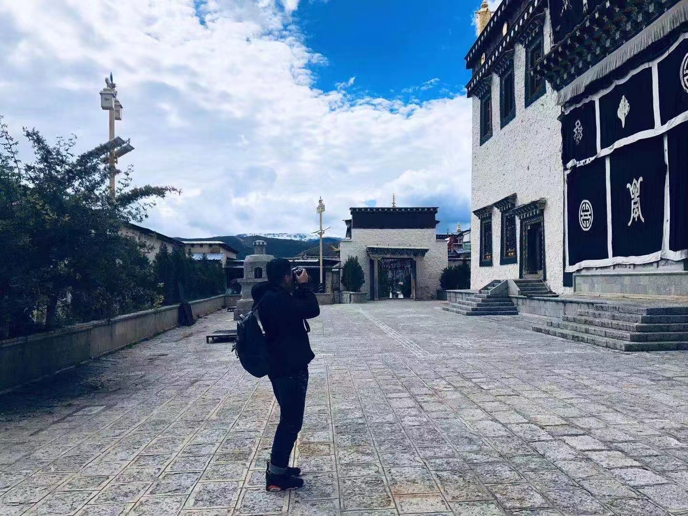

陈陌
java开发工程师我叫陈陌，是一名java开发工程师，目前居住于吉林长春，在一家服务于一汽的企业工作，主要做车联网相关项目。喜欢代码，篮球，游戏，旅游，是个重度代码洁癖患者。未来一段时间的学习计划以前端为主，期望掌握熟练的全栈技术。
旅拍
这是在香格里拉的松赞林寺，同伴拍摄到的我摄影瞬间的照片。
我叫陈陌，是一名java开发工程师，目前居住于吉林长春，在一家服务于一汽的企业工作，主要做车联网相关项目。喜欢代码，篮球，游戏，旅游，是个重度代码洁癖患者。未来一段时间的学习计划以前端为主，期望掌握熟练的全栈技术。
这是在香格里拉的松赞林寺，同伴拍摄到的我摄影瞬间的照片。